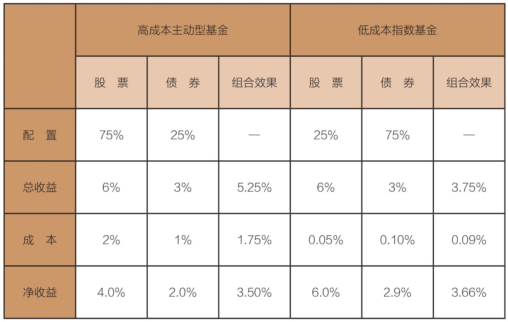

经济将持续增长很长时间，股票市场的内在价值将反映出经济增长，为什么？
我们该如何着手去建立一个适合自己的未来资产配置计划？
在本章和下一章中，我们来解答两个复杂问题：资产配置的普遍原则和专门为退休设置及配置的基金。
为什么？首先，投资者拥有比较宽泛的投资目标、风险承受能力和行为特征。其次，过去35年里，我们在股票和债券市场上收获了非凡的收益，但这在未来10年将难以为继（见第9章）。再次，从真正意义上来说，投资类图书作者是我们已共同经历过的那个年代的“产物”。
例如，本杰明·格雷厄姆在1949年写作《聪明的投资者》时，从来没有经历过债券利息超过股利的年代。与之相对的是，我在2017年写作本章时，已见证了股利连续60年没有超过债券利息。这样的反转，看起来也算是一场公平的游戏。
因此，不要再回首过去，也不要钻进大量过往收益和风险的数据里面淘金了。我将要阐述的原则是你在当前情况下拿来就能用的。无论你是在工作期间积累资产，还是等到退休以后从资产中提现，我都希望能够帮助你建立一个适合你的未来资产配置计划。
本杰明·格雷厄姆坚信，你的第一个投资决策应该是如何配置你的投资资金：你应该持有多少股票、多少债券？格雷厄姆还认为，这很可能是你投资生涯中最重要的战略决策。1986年，一项标志性学术研究证实了他的观点。
研究发现，资产配置导致机构养老基金的收益差异达到令人吃惊的94%。这个数据差异表明，长期基金投资者应该将更多投资资金集中到股票基金和债券基金的配置中，同时少去思考持有哪只具体基金的问题。
我们应该从哪里开始呢？就让我们从本杰明·格雷厄姆1949年出版的经典著作《聪明的投资者》中关于资产配置的建议开始吧。
我们建议的基本指导原则是投资者持有的普通股不应少于25%或超过75%，在债券上则反过来应用，即25%～75%。我们可以简化为，这两种主要的投资品类的标准配置比例应该是一个等式，即50∶50。
除此之外，对一个真正的保守型投资者来说，当组合里有一半的资产处于上涨市场中时，他会感到满足；相反，如果处于暴跌市场中时，他就会得到安慰［拉罗什富科（La Rochefoucauld）(1)］，因为他比许多冒更大风险的朋友们好过太多了。
对当前的投资者和他们的顾问来说，50%股票与50%债券的配置——在75%股票与25%债券到25%股票与75%债券的范围——可能看起来会更加保守。但在1949年格雷厄姆写作他的书时，股利是6.9%、债券利息是1.9%。如今，股利是2.0%，而债券利息是3.1%——不同的市场环境决定了应该配置多少股票和多少债券(2)。
这种差异可以总结为两个重要的点：
◆50%股票与50%债券的组合产生的利息总收入已经下降了40%，从4.4%下滑到2.6%。
◆利率表经历了上下波动的过程，股票市场在1949年派发的年股利率是5.0%（惊喜吧！），但到了2017年下降到1.1%。
我在1993年写作的《共同基金常识》一书中，讨论了格雷厄姆的哲学，仅使用两类资产是我的起点。我给投资者的建议是，在他们人生的积累阶段，靠工作获得财富，专注于股票和债券组合，年轻投资者可以配置80%的股票和20%的债券，年纪大的投资者可以配置70%的股票和30%的债券。对于开始筹划退休配置计划的投资者，年轻投资者可以是60%股票与40%债券，年纪大的投资者可以是50%股票与50%债券。
尽管当前的利息和收益率都显著偏低，又经历过格雷厄姆时代的大牛市以及后续的几次颠簸（包括1973—1974年和1987年的股市崩溃、2000年的互联网泡沫破灭、2008—2009年的全球经济危机），但格雷厄姆当年阐述的普遍原则仍然适用。他建议的资产配置比例，仍是明智投资计划的坚实起点。
两个基本因素决定了你应该分配多少资产在股票和债券上：
◆你承受风险的能力。
◆你承受风险的意愿。
你承受风险的能力主要取决于以下几个因素的组合：你的财务状况、预期负债（如退休后支出、子女或孙子（女）的大学学费、住宅分期款），以及偿还这些负债需要的时间区间。通常，如果这些负债发生在相对久远的未来，你就可以承受较多风险。简单来讲，你只有为偿还负债积累更多资产，你承受风险的能力才会提高。
你承受风险的意愿则完全是个人偏好问题。有些投资者能从容面对市场涨跌，不会为此担忧。但如果你因为担心组合波动，而无法在夜里安然入睡，那么你或许在承受着超过自己意愿的风险。综合考虑，你承受风险的能力和承受风险的意愿构成了你的风险容忍度（risk tolerance）。
我们从一个适用于财富构建和积累资产的基础配置模型开始。
◆通过不断投资来积累资产的投资者可以承担更多风险，意味着态度更加进取；反之，那些资本相对固定，依赖收入，还要从中提取日常生活开销的投资者，态度则更加保守。
◆比较年轻的投资者拥有更多时间让复利效应发挥作用，因此，可以适当保持进取；而年纪较大的投资者可能更希望选择保守的路径。
格雷厄姆的配置建议是合理的；而我的建议虽有些类似，但更加灵活。你持有的普通股比例应该和你的风险容忍度保持一致。举例来说，对于正处于长期积累财富阶段的年轻人，我建议其资产配置中的股票占比是全部资产的80%。
我建议，年纪较大的投资者在退休以后，最少要持有25%的股票。这类投资者应该更加关注短期结果，而不是未来能实现多少收益。他们应该知道，收益波动性也是衡量风险的一项不完美指标。更有意义的风险评估，是可能会为了生活开销必须变卖资产，如果这发生在熊市，那么变卖所得甚至会低于初始成本。对投资而言，绝对不存在任何保证。
作为一名聪明的投资者，你必须作出与资产配置计划有关的4项决定：
第一个，也是最重要的决定，是你必须作出战略性选择。在配置股票和债券时，每个投资者都应该顺应独特的需求和环境，作出明显不同的决定。
第二个不可避免的决定是坚持固定比例还是因收益而变化的比例。固定比例（定期平衡初始资产配置比例）是一个聪明的选择，可以限制风险，可能是大多数投资者的较好选择。然而，不进行平衡的组合可能会贡献更高的长期收益。
第三个决定是是否引入战术配置因子，依据市场环境变化调整股票和债券的配置比例。战术配置因子也有自身的风险。调整股票和债券的比例可能会增加价值，但也可能（我认为，更可能）不会增加价值。在我们这个不确定的世界里，应尽量少作战术调整，因为它暗含着一个我们几乎不具备的确定性预期。总之，投资者不应该参与战术配置。
第四个，或许是最重要的决定，是专注于主动型共同基金还是传统指数基金。现在已有清晰又令人信服的证据指向指数基金策略。
上述四项决定需要聪明的投资者作出艰难、严苛的选择。带着体贴、细心和审慎，你就可以作出聪明的选择。
是的，你的投资组合在股票和债券之间的配置，可能会是影响你财富积累的一个重要决定。但几乎没有投资者意识到基金成本和资产配置之间的重要关联。
成本较低的投资组合，即使股票配置的比例较低（风险也较低），其收益也可能等同或超过股票配置比例较高（风险也较高）的投资组合。只要低风险投资组合的投资成本显著低于高风险投资组合的投资成本，就能达成这项目的。
这个简单的例子或许可以为你提供帮助，见表18-1。
表18-1 通过降低成本，你可以在较低风险情况下获取更高收益

在这里，让我们假设一个投资者持有75%股票和25%债券，预期股票年总收益率是6%，而债券年总收益率是3%。投资者如果采用主动型基金，那么股票与债券基金的年度总成本分别是2%和1%。如此，这个组合的预期净收益率可能是3.50%。
假设前述的股票和债券的比例不变，有一个更加保守的投资者，持有着股票债券比例为25∶75的组合——刚好与前项配置相反，但假如这个投资者用费率0.05%的股票和费率0.01%的债券组成的低成本指数基金替换掉那些高成本的主动型共同基金。在平衡指数组合之后，这个组合的预期年净收益就会实质增长到3.66%。
在这个例子里，简单地把多余成本从等式中移除，25%股票与75%债券的组合就能超过75%股票与25%债券的组合。指数基金改变了资产配置的传统智慧。
请注意成本！风险溢价和成本陷阱，向来处于对峙状态，必须在平衡组合里的股票和债券的过程中找到解决方案。是时候进行这项程序了。我再说清楚一些：我不建议你降低股票配置比例，你只需要用低成本指数基金替换高成本主动型基金。但我建议你，如果你的资产组合里有主动型股票和债券基金，你正在支付远高于低成本指数基金的费用，你就应该考虑怎样做才能产生最多的净收益。简单地算一算吧。
构建一个精明的资产配置策略并非是精确的科学。我们的表现可能远远比不上本杰明·格雷厄姆所主张的中心目标。他建议人们采用的配置方式十分简洁，即50%股票与50%债券，或是75%股票与25%债券到25%股票与75%债券之间的组合，除此之外再无其他。
资产配置并不需要十分精确。这也与投资人的判断力、期望、恐惧以及风险容忍度等因素密切相关。对投资者来说，没有万无一失的策略可供使用。甚至连我有时都会担心自己的投资组合的配置。
在下面的这封信里，我向一位年轻的投资者解释了我所关心的几个议题。他正在尝试给自己的组合设置一个合理的资产配置，也担心我们这个脆弱的世界和持续变化的社会将来可能会发生灾难。
我相信，美国经济将持续增长很长时间，股票市场的内在价值将反映出经济增长。为什么？因为内在价值由股利收益率和收益增长创造，从历史上看，股票市场和按GDP统计的经济增长的相关系数是0.96（接近1，完美相关）。
当然，股票价格增长到内在价值以上（或下降到内在价值以下）需要时间。这很可能正是估值过高的时候（或者，我们永远无法确定）。但长期来看，市场价格总是（最终）会回归到内在价值。我相信（和巴菲特一样），那正是一个总体理性的途径。
大量风险——有些可知，有些不可知——当然存在。你和我只能知道这么多（或这么少），就像其他人一样。我们只能依靠自己，评估可能性和结果。但如果我们不投资，就什么也得不到。
我自己的组合持有约50∶50的指数股票和债券，大部分属于指数型的短期和中期工具。我今年88岁了，对这样的配置感觉十分舒适。
但我也承认，我有一半的时间是在担忧持有太多股票，而另一半时间是在担忧持有股票不够多。总而言之，毕竟我们都是凡人，在无知的迷雾中摸索，只能依靠我们的机遇和常识，建立一个适合的资产配置。
请允许我改述丘吉尔先生关于民主制度的名言：“我的投资策略是我见过的最糟糕的策略……除了其他曾尝试过的每一种策略之外。”我希望这条评论能够帮上一些忙。祝你好运。
约翰·博格
最后，我祝福阅读本章的朋友们好运。资产配置问题根本就没有唯一的简单答案，因此，我们只有尽己所能，力求将自己的资产配置做到最好。
(1)意思可参考这条格言：“我们每个人都有足够的勇气忍受他人的不幸。”
(2)债券利息通过这样的组合计算得出：一半企业债券（利息3.9%）和一半美国10年期国债（利息2.3%）。